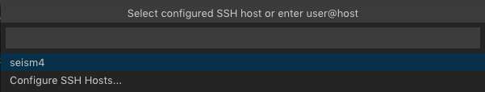
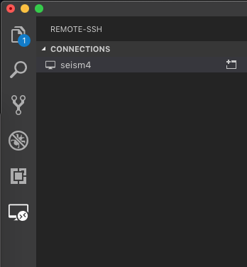
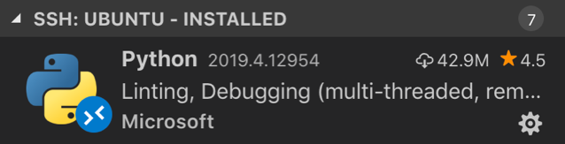
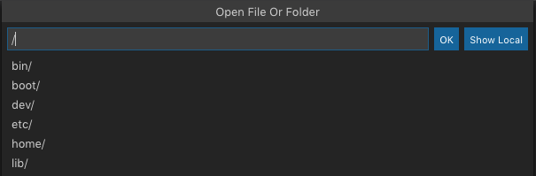

  
    
  


  


  


  

<!DOCTYPE html>
<html lang="zh-cn">
  <head>
    
    <script type="text/javascript"
        async
        src="https://cdn.bootcss.com/mathjax/2.7.3/MathJax.js?config=TeX-AMS-MML_HTMLorMML">
MathJax.Hub.Config({
  tex2jax: {
    inlineMath: [['$','$']],
    displayMath: [['$$','$$']],
    processEscapes: true,
    processEnvironments: true,
    skipTags: ['script', 'noscript', 'style', 'textarea', 'pre'],
    TeX: { equationNumbers: { autoNumber: "AMS" },
         extensions: ["AMSmath.js", "AMSsymbols.js"] }
  }
});

MathJax.Hub.Queue(function() {
    
    
    
    var all = MathJax.Hub.getAllJax(), i;
    for(i = 0; i < all.length; i += 1) {
        all[i].SourceElement().parentNode.className += ' has-jax';
    }
});
</script>

<style>
code.has-jax {
    font: inherit;
    font-size: 100%;
    background: inherit;
    border: inherit;
    color: #515151;
}
</style>
    <meta charset="UTF-8">
    <meta name="viewport" content="width=device-width, initial-scale=1">
    <meta name="generator" content="Hugo 0.53 with theme Tranquilpeak 0.4.1-BETA">
    <title>在VSCode中使用Remote-SSH进行远程开发</title>
    <meta name="author" content="Mijian Xu">
    <meta name="keywords" content="tech">

    <link rel="icon" href="../../../favicon.png">
    

    
    <meta name="description" content="
动图来自官网">
    <meta property="og:description" content="
动图来自官网">
    <meta property="og:type" content="blog">
    <meta property="og:title" content="在VSCode中使用Remote-SSH进行远程开发">
    <meta property="og:url" content="/2019/06/%E5%9C%A8vscode%E4%B8%AD%E4%BD%BF%E7%94%A8remote-ssh%E8%BF%9B%E8%A1%8C%E8%BF%9C%E7%A8%8B%E5%BC%80%E5%8F%91/">
    <meta property="og:site_name" content="Note to Tech">
    <meta name="twitter:card" content="summary">
    <meta name="twitter:title" content="Note to Tech">
    <meta name="twitter:description" content="
动图来自官网">
    
    

    
    

    
      <meta property="og:image" content="//www.gravatar.com/avatar/3c21a901526ad8ccb4e92dd5c571b204?s=640">
    

    
    
    

    

    
    <link rel="stylesheet" href="https://cdnjs.cloudflare.com/ajax/libs/font-awesome/4.7.0/css/font-awesome.min.css" integrity="sha256-eZrrJcwDc/3uDhsdt61sL2oOBY362qM3lon1gyExkL0=" crossorigin="anonymous" />
    <link rel="stylesheet" href="https://cdnjs.cloudflare.com/ajax/libs/fancybox/2.1.4/jquery.fancybox.min.css" integrity="sha256-vuXZ9LGmmwtjqFX1F+EKin1ThZMub58gKULUyf0qECk=" crossorigin="anonymous" />
    <link rel="stylesheet" href="https://cdnjs.cloudflare.com/ajax/libs/fancybox/2.1.4/helpers/jquery.fancybox-thumbs.min.css" integrity="sha256-SEa4XYAHihTcEP1f5gARTB2K26Uk8PsndQYHQC1f4jU=" crossorigin="anonymous" />
    
    
    <link rel="stylesheet" href="../../../css/style-fpbzgxsy0kgmdvyrj5ykkg6ratccrk3gocmaqn4xpcjywmv5dteilzucro4f.min.css" />
    
    

    
      
    
    
  </head>

  <body>
    <div id="blog">
      <header id="header" data-behavior="5">
  <i id="btn-open-sidebar" class="fa fa-lg fa-bars"></i>
  <div class="header-title">
    <a class="header-title-link" href="../../../">Note to Tech</a>
  </div>
  
    
      <a class="header-right-picture "
         href="../../../#about">
    
    
    
      
        
      
    
    </a>
  
</header>

      <nav id="sidebar" data-behavior="5">
  <div class="sidebar-container">
    
      <div class="sidebar-profile">
        <a href="../../../#about">
          
        </a>
        <h4 class="sidebar-profile-name">Mijian Xu</h4>
        
          <h5 class="sidebar-profile-bio">千里之行始于足下</h5>
        
      </div>
    
    <ul class="sidebar-buttons">
      
  <li class="sidebar-button">
    
      <a class="sidebar-button-link " href="../../../">
    
      <i class="sidebar-button-icon fa fa-lg fa-home"></i>
      
      <span class="sidebar-button-desc">首页</span>
    </a>
  </li>

  <li class="sidebar-button">
    
      <a class="sidebar-button-link " href="../../../categories">
    
      <i class="sidebar-button-icon fa fa-lg fa-bookmark"></i>
      
      <span class="sidebar-button-desc">分类</span>
    </a>
  </li>

  <li class="sidebar-button">
    
      <a class="sidebar-button-link " href="../../../tags">
    
      <i class="sidebar-button-icon fa fa-lg fa-tags"></i>
      
      <span class="sidebar-button-desc">标签</span>
    </a>
  </li>

  <li class="sidebar-button">
    
      <a class="sidebar-button-link " href="../../../archives">
    
      <i class="sidebar-button-icon fa fa-lg fa-archive"></i>
      
      <span class="sidebar-button-desc">归档</span>
    </a>
  </li>

  <li class="sidebar-button">
    
      <a class="sidebar-button-link " href="../../../#about">
    
      <i class="sidebar-button-icon fa fa-lg fa-question"></i>
      
      <span class="sidebar-button-desc">关于</span>
    </a>
  </li>


    </ul>
    <ul class="sidebar-buttons">
      
  <li class="sidebar-button">
    
      <a class="sidebar-button-link " href="https://github.com/xumi1993" target="_blank" rel="noopener">
    
      <i class="sidebar-button-icon fa fa-lg fa-github"></i>
      
      <span class="sidebar-button-desc">GitHub</span>
    </a>
  </li>


    </ul>
    <ul class="sidebar-buttons">
      
  <li class="sidebar-button">
    
      <a class="sidebar-button-link " href="../../../index.xml">
    
      <i class="sidebar-button-icon fa fa-lg fa-rss"></i>
      
      <span class="sidebar-button-desc">RSS</span>
    </a>
  </li>


    </ul>
  </div>
</nav>

      

      <div id="main" data-behavior="5"
        class="
               hasCoverMetaIn
               ">
        <article class="post" itemscope itemType="http://schema.org/BlogPosting">
          
          
            <div class="post-header main-content-wrap text-left">
  
    <h1 class="post-title" itemprop="headline">
      在VSCode中使用Remote-SSH进行远程开发
    </h1>
  
  
  <div class="postShorten-meta post-meta">
    
      <time itemprop="datePublished" datetime="2019-06-18T12:30:12&#43;08:00">
        
  六月 18, 2019

      </time>
    
    
  
  
    <span>发布在</span>
    
      <a class="category-link" href="../../../categories/linux">Linux</a>, 
    
      <a class="category-link" href="../../../categories/subcategory">subcategory</a>
    
  


  </div>

</div>
          
          <div class="post-content markdown" itemprop="articleBody">
            <div class="main-content-wrap">
              <p>
动图来自<a href="https://microsoft.github.io/vscode-remote-release/images/ssh-readme.gif">官网</a></p>

<h2 id="overview">Overview</h2>

<p>远程开发对于开发者尤其是Linux开发者来说是一种迫切的需求，我们所需求的远程开发工具通常需要具备以下几个功能：</p>

<ul>
<li><strong>在本地对服务器端代码进行编辑</strong></li>
<li><strong>能在本地对服务器端代码用服务器端环境进行编译和调试</strong></li>
<li><strong>代码高亮和补全要满足服务器端环境</strong></li>
<li><strong>较低的成本</strong></li>
</ul>

<p>那么现有的解决方案有以下几种：</p>

<table>
<thead>
<tr>
<th align="center">方式</th>
<th align="center">优点</th>
<th align="center">缺点</th>
</tr>
</thead>

<tbody>
<tr>
<td align="center">通过终端远程登录，用<strong><em>Vim</em></strong>、<strong><em>Emacs</em></strong>等编辑。</td>
<td align="center">直接在服务器端运行易于编译调试，通过插件和配置可以获得代码高亮和补全</td>
<td align="center">Vim 没有图形化，在开发大型项目时难以使用</td>
</tr>

<tr>
<td align="center">使用<a href="http://www.jetbrains.com/">JetBrains</a>套件中的远程开发功能</td>
<td align="center">可以满足前三个功能</td>
<td align="center">太贵了，对个人用户是一个负担。而社区版则没有这个功能</td>
</tr>

<tr>
<td align="center">使用VSCode中<code>rmate</code>插件</td>
<td align="center">在VSCode中编辑服务器端文件</td>
<td align="center">只能编辑，不能编译和调试。而且使用不便。代码补全也是基于本地环境的</td>
</tr>
</tbody>
</table>

<h2 id="安装">安装</h2>

<p>好在最近有<strong><em>Microsoft</em></strong>发布的VSCode插件<a href="https://aka.ms/vscode-remote/download/extension">Remote Development</a>解决了这些问题。首先我们做一些准备工作：</p>

<ol>
<li>一台开启<code>open-ssh</code>的Linux服务器，一台可以远程登录的客户端。</li>
<li>客户端需要版本高于<code>1.35</code>的VSCode。</li>
<li>在VSCode中安装<a href="https://aka.ms/vscode-remote/download/extension">Remote Development</a></li>
</ol>

<h2 id="配置">配置</h2>

<p>我们需要对客户端和服务器端（不需要管理员权限）进行一些配置：</p>

<ol>
<li>客户端和服务器端需要进行公私要配对，Remote Development不支持单纯的密码登录，但密码可以作为两步认证的密码登录。</li>
<li>在<code>$HOME/.ssh/config</code>或者<code>/etc/ssh/ssh_config</code>中配置服务器名称和登录信息。在VSCode的命令板中输入<code>Remote-SSH: Open Configuration File...</code>，选择要修改的文件，打开文件后输入服务器名称和登录信息。例如：</li>
</ol>

<pre><code>Host example-remote-linux-machine
    User your-user-name-here
    HostName host-fqdn-or-ip-goes-here

Host example-remote-linux-machine-with-identity-file
    User your-user-name-on-host
    HostName another-host-fqdn-or-ip-goes-here
    IdentityFile ~/.ssh/id_rsa-remote-ssh
</code></pre>

<blockquote>
<p>只在自己的Mac上测试过，详细安装方法见<a href="https://code.visualstudio.com/docs/remote/ssh#_getting-started">官方文档</a></p>
</blockquote>

<h2 id="连接服务器">连接服务器</h2>

<p>在命令板中输入<code>Remote-SSH: Connect to Host...</code>，然后选择配置过的服务器名就可以链接服务器。
</p>

<p>或者在左侧工具栏中找到配置过的服务器名就，右键点击连接服务器。
</p>

<h2 id="安装远程插件">安装远程插件</h2>

<p>现在我们还没有安装远程插件，也就是说编译、调试等功能还不能在远程使用。Remote Development提供了远程插件，为SSH主机上的给定工作区安装任何所需的扩展。例如
</p>

<h2 id="使用">使用</h2>

<p>连接服务器之后，再打开文件，这时会询问你服务器上的路径，如图
</p>

<p>打开项目后和本地一样设置编译器调试即可。</p>
              
            </div>
          </div>
          <div id="post-footer" class="post-footer main-content-wrap">
            
              
                
                
                  <div class="post-footer-tags">
                    <span class="text-color-light text-small">标签</span><br/>
                    
  <a class="tag tag--primary tag--small" href="https://blog.xumijian.me/tags/vscode/">vscode</a>

  <a class="tag tag--primary tag--small" href="https://blog.xumijian.me/tags/ssh/">SSH</a>

  <a class="tag tag--primary tag--small" href="https://blog.xumijian.me/tags/linux/">Linux</a>

                  </div>
                
              
            
            
  <div class="post-actions-wrap">
      <nav >
        <ul class="post-actions post-action-nav">
            <li class="post-action">
              
                <a class="post-action-btn btn btn--disabled">
              
                <i class="fa fa-angle-left"></i>
                <span class="hide-xs hide-sm text-small icon-ml">下一篇</span>
              </a>
            </li>
            <li class="post-action">
              
                <a class="post-action-btn btn btn--default tooltip--top" href="../../../2019/03/%E7%94%A8fuse%E5%92%8Cntfs-3g%E5%9C%A8macos%E4%B8%8B%E6%89%93%E9%80%A0%E5%85%8D%E8%B4%B9%E7%9A%84ntfs%E8%A7%A3%E5%86%B3%E6%96%B9%E6%A1%88/" data-tooltip="用FUSE和ntfs-3g在MacOS下打造免费的NTFS解决方案">
              
                <span class="hide-xs hide-sm text-small icon-mr">上一篇</span>
                <i class="fa fa-angle-right"></i>
              </a>
            </li>
        </ul>
      </nav>
    <ul class="post-actions post-action-share" >
      
        <li class="post-action hide-lg hide-md hide-sm">
          <a class="post-action-btn btn btn--default btn-open-shareoptions" href="#btn-open-shareoptions">
            <i class="fa fa-share-alt"></i>
          </a>
        </li>
        
      
      
        <li class="post-action">
          <a class="post-action-btn btn btn--default" href="#disqus_thread">
            <i class="fa fa-comment-o"></i>
          </a>
        </li>
      
      <li class="post-action">
        
          <a class="post-action-btn btn btn--default" href="#">
        
          <i class="fa fa-list"></i>
        </a>
      </li>
    </ul>
  </div>


            
              
                <div id="disqus_thread">
  <noscript>Please enable JavaScript to view the <a href="//disqus.com/?ref_noscript">comments powered by Disqus.</a></noscript>
</div>

              
            
          </div>
        </article>
        <footer id="footer" class="main-content-wrap">
  <span class="copyrights">
    &copy; 2019 Mijian Xu. All Rights Reserved
  </span>
</footer>

      </div>
      <div id="bottom-bar" class="post-bottom-bar" data-behavior="5">
        
  <div class="post-actions-wrap">
      <nav >
        <ul class="post-actions post-action-nav">
            <li class="post-action">
              
                <a class="post-action-btn btn btn--disabled">
              
                <i class="fa fa-angle-left"></i>
                <span class="hide-xs hide-sm text-small icon-ml">下一篇</span>
              </a>
            </li>
            <li class="post-action">
              
                <a class="post-action-btn btn btn--default tooltip--top" href="../../../2019/03/%E7%94%A8fuse%E5%92%8Cntfs-3g%E5%9C%A8macos%E4%B8%8B%E6%89%93%E9%80%A0%E5%85%8D%E8%B4%B9%E7%9A%84ntfs%E8%A7%A3%E5%86%B3%E6%96%B9%E6%A1%88/" data-tooltip="用FUSE和ntfs-3g在MacOS下打造免费的NTFS解决方案">
              
                <span class="hide-xs hide-sm text-small icon-mr">上一篇</span>
                <i class="fa fa-angle-right"></i>
              </a>
            </li>
        </ul>
      </nav>
    <ul class="post-actions post-action-share" >
      
        <li class="post-action hide-lg hide-md hide-sm">
          <a class="post-action-btn btn btn--default btn-open-shareoptions" href="#btn-open-shareoptions">
            <i class="fa fa-share-alt"></i>
          </a>
        </li>
        
      
      
        <li class="post-action">
          <a class="post-action-btn btn btn--default" href="#disqus_thread">
            <i class="fa fa-comment-o"></i>
          </a>
        </li>
      
      <li class="post-action">
        
          <a class="post-action-btn btn btn--default" href="#">
        
          <i class="fa fa-list"></i>
        </a>
      </li>
    </ul>
  </div>


      </div>
      <div id="share-options-bar" class="share-options-bar" data-behavior="5">
  <i id="btn-close-shareoptions" class="fa fa-close"></i>
  <ul class="share-options">
    
  </ul>
</div>
<div id="share-options-mask" class="share-options-mask"></div>
    </div>
    
    <div id="about">
  <div id="about-card">
    <div id="about-btn-close">
      <i class="fa fa-remove"></i>
    </div>
    
      
    
    <h4 id="about-card-name">Mijian Xu</h4>
    
      <div id="about-card-bio">千里之行始于足下</div>
    
    
      <div id="about-card-job">
        <i class="fa fa-briefcase"></i>
        <br/>
        Ph.D in Seismology, Nanjing University
      </div>
    
    
      <div id="about-card-location">
        <i class="fa fa-map-marker"></i>
        <br/>
        China
Nanjing
      </div>
    
  </div>
</div>

    <div id="algolia-search-modal" class="modal-container">
  <div class="modal">
    <div class="modal-header">
      <span class="close-button"><i class="fa fa-close"></i></span>
      <a href="https://algolia.com" target="_blank" rel="noopener" class="searchby-algolia text-color-light link-unstyled">
        <span class="searchby-algolia-text text-color-light text-small">by</span>
        
      </a>
      <i class="search-icon fa fa-search"></i>
      <form id="algolia-search-form">
        <input type="text" id="algolia-search-input" name="search"
          class="form-control input--large search-input" placeholder="搜索" />
      </form>
    </div>
    <div class="modal-body">
      <div class="no-result text-color-light text-center"></div>
      <div class="results">
        
        
          <div class="media">
            
            <div class="media-body">
              <a class="link-unstyled" href="https://blog.xumijian.me/2019/06/%E5%9C%A8vscode%E4%B8%AD%E4%BD%BF%E7%94%A8remote-ssh%E8%BF%9B%E8%A1%8C%E8%BF%9C%E7%A8%8B%E5%BC%80%E5%8F%91/">
                <h3 class="media-heading">在VSCode中使用Remote-SSH进行远程开发</h3>
              </a>
              <span class="media-meta">
                <span class="media-date text-small">
                  Jun 6, 2019
                </span>
              </span>
              <div class="media-content hide-xs font-merryweather"><p>
动图来自<a href="https://microsoft.github.io/vscode-remote-release/images/ssh-readme.gif">官网</a></p></div>
            </div>
            <div style="clear:both;"></div>
            <hr>
          </div>
        
          <div class="media">
            
            <div class="media-body">
              <a class="link-unstyled" href="https://blog.xumijian.me/2019/03/%E7%94%A8fuse%E5%92%8Cntfs-3g%E5%9C%A8macos%E4%B8%8B%E6%89%93%E9%80%A0%E5%85%8D%E8%B4%B9%E7%9A%84ntfs%E8%A7%A3%E5%86%B3%E6%96%B9%E6%A1%88/">
                <h3 class="media-heading">用FUSE和ntfs-3g在MacOS下打造免费的NTFS解决方案</h3>
              </a>
              <span class="media-meta">
                <span class="media-date text-small">
                  Mar 3, 2019
                </span>
              </span>
              <div class="media-content hide-xs font-merryweather"><p><a href="https://www.paragon-software.com/home/ntfs-mac/">Paragon NTFS for Mac</a>和<a href="https://www.tuxera.com/products/tuxera-ntfs-for-mac/">Tuxera</a>是MacOS下常用的NTFS解决方案，但这些软件都是商业软件，而且价格不菲。这些软件除了实现NTFS的读写功能外，还有一些磁盘监测、卸载快捷键等功能，也有很好看的图形界面。但是这些额外功能对我来说都不是必须的，那么有没有一种解决方案可以免费实现最简单的NTFS读写功能呢？</p>

<p>那么这里将介绍通过FUSE和ntfs-3g实现NTFS读写功能</p></div>
            </div>
            <div style="clear:both;"></div>
            <hr>
          </div>
        
          <div class="media">
            
            <div class="media-body">
              <a class="link-unstyled" href="https://blog.xumijian.me/2019/03/%E7%94%A8sshfs%E8%BF%9C%E7%A8%8B%E6%8C%82%E8%BD%BD%E8%B7%AF%E5%BE%84%E5%88%B0%E6%9C%AC%E5%9C%B0/">
                <h3 class="media-heading">用sshfs远程挂载路径到本地</h3>
              </a>
              <span class="media-meta">
                <span class="media-date text-small">
                  Mar 3, 2019
                </span>
              </span>
              <div class="media-content hide-xs font-merryweather"><p><strong>ssh</strong>是常用的远程登陆服务，我们经常使用<strong>scp</strong>、<strong>sftp</strong>等工具与远程服务器进行文件交互。如果是常用的服务器这样工具相对麻烦，如果我们可以像打开本地文件一样打开服务器上的文件就十分方便了。<strong>sshfs可以将远程服务器上的路径作为文件系统挂载到本地。</strong></p></div>
            </div>
            <div style="clear:both;"></div>
            <hr>
          </div>
        
          <div class="media">
            
            <div class="media-body">
              <a class="link-unstyled" href="https://blog.xumijian.me/2019/02/hhkb%E4%BD%BF%E7%94%A8%E5%BF%83%E5%BE%97/">
                <h3 class="media-heading">Hhkb使用心得</h3>
              </a>
              <span class="media-meta">
                <span class="media-date text-small">
                  Feb 2, 2019
                </span>
              </span>
              <div class="media-content hide-xs font-merryweather"><p>
图片来自<a href="http://www.pfu.com.cn/HHKB/">HHKB官网</a></p></div>
            </div>
            <div style="clear:both;"></div>
            <hr>
          </div>
        
          <div class="media">
            
            <div class="media-body">
              <a class="link-unstyled" href="https://blog.xumijian.me/2019/02/%E6%9C%BA%E6%A2%B0%E9%94%AE%E7%9B%98%E8%BD%B4%E4%BD%93%E5%B0%8F%E8%AE%B0%E4%B8%80cherry/">
                <h3 class="media-heading">机械键盘轴体小记（一）：Cherry</h3>
              </a>
              <span class="media-meta">
                <span class="media-date text-small">
                  Feb 2, 2019
                </span>
              </span>
              <div class="media-content hide-xs font-merryweather"><p></p>

<p>Varmilo VA88M 双彩虹RGB，来自<a href="https://www.cherrymx.de/en/blog/VARMILO-VA88M-DOUBLE-RAINBOW-RGB-INTRODUCTION.html">Cherry官方博客</a>。</p></div>
            </div>
            <div style="clear:both;"></div>
            <hr>
          </div>
        
          <div class="media">
            
            <div class="media-body">
              <a class="link-unstyled" href="https://blog.xumijian.me/2019/01/mpipool-mpi4py/">
                <h3 class="media-heading">Mpipool Mpi4py</h3>
              </a>
              <span class="media-meta">
                <span class="media-date text-small">
                  Jan 1, 2019
                </span>
              </span>
              <div class="media-content hide-xs font-merryweather"><p><a href="http://mpi4py.readthedocs.io/en/stable/index.html">mpi4py</a> is a python API for MPI. <strong>MPIPoolExecutor</strong> is a subclass of <code>mpi4py.futures</code> to create MPI processes to execute calls asynchronously</p></div>
            </div>
            <div style="clear:both;"></div>
            <hr>
          </div>
        
          <div class="media">
            
            <div class="media-body">
              <a class="link-unstyled" href="https://blog.xumijian.me/2017/11/vim-%E4%BD%BF%E7%94%A8%E7%AC%94%E8%AE%B0/">
                <h3 class="media-heading">Vim 使用笔记</h3>
              </a>
              <span class="media-meta">
                <span class="media-date text-small">
                  Nov 11, 2017
                </span>
              </span>
              <div class="media-content hide-xs font-merryweather"><h2 id="目录">目录</h2>

<ul>
<li><strong><a href="#command-mode">Command Mode</a></strong>

<ul>
<li><a href="#cursor-motions">Cursor Motions</a></li>
<li><a href="#edit-command">Edit Command</a></li>
<li><a href="#window-motion">Window Motion</a></li>
</ul></li>
<li><strong><a href="#insert-mode">Insert Mode</a></strong></li>
<li><strong><a href="#visual-mode">Visual Mode</a></strong></li>
<li><strong><a href="#search-and-replace">Search and Replace</a></strong>

<ul>
<li><a href="#basic-usage">Basic usage</a></li>
<li><a href="#replace">Replace</a></li>
<li><a href="#regular-expression">Regular Expression</a></li>
<li><a href="#vim-中常用的替换表达式">Vim 中常用的替换表达式</a></li>
</ul></li>
<li><strong><a href="#ctags-and-taglist">Ctags and Taglist</a></strong>

<ul>
<li><a href="#ctags-configure">Ctags Configure</a></li>
<li><a href="#pythontag">为Python标准库添加标签</a></li>
<li><a href="#systag">为C/C++系统函数添加标签</a></li>
<li><a href="#taglist-configure">Taglist Configure</a></li>
</ul></li>
</ul></div>
            </div>
            <div style="clear:both;"></div>
            <hr>
          </div>
        
          <div class="media">
            
            <div class="media-body">
              <a class="link-unstyled" href="https://blog.xumijian.me/2017/10/%E9%85%8D%E7%BD%AEvim%E5%BC%80%E5%8F%91%E7%8E%AF%E5%A2%83/">
                <h3 class="media-heading">配置Vim开发环境</h3>
              </a>
              <span class="media-meta">
                <span class="media-date text-small">
                  Oct 10, 2017
                </span>
              </span>
              <div class="media-content hide-xs font-merryweather"><p>配置一个优秀个开发环境可以极大地提高开发效率，在Linux里Vim是最常用的开发环境之一（emacs也是相当不错的，但鄙人是Vim的忠实粉丝），我们一般所说的开发环境包括了</p>

<ul>
<li>代码高亮</li>
<li>文件树</li>
<li>配色方案</li>
<li>自动缩进</li>
<li>代码补全</li>
</ul>

<p>这里就Linux中配置这些功能做一个简单的介绍</p></div>
            </div>
            <div style="clear:both;"></div>
            <hr>
          </div>
        
          <div class="media">
            
            <div class="media-body">
              <a class="link-unstyled" href="https://blog.xumijian.me/2017/10/fedora26%E4%B8%AD%E5%AE%89%E8%A3%85google%E6%8B%BC%E9%9F%B3%E8%BE%93%E5%85%A5%E6%B3%95/">
                <h3 class="media-heading">Fedora26中安装Google拼音输入法</h3>
              </a>
              <span class="media-meta">
                <span class="media-date text-small">
                  Oct 10, 2017
                </span>
              </span>
              <div class="media-content hide-xs font-merryweather"><p>在Fedora25的时候sogou拼音出现了一些不兼容的情况，从而使我转而使用Google拼音。如今操作系统已经换成了Fedora26，这里就记录下安装Google拼音的过程。</p></div>
            </div>
            <div style="clear:both;"></div>
            <hr>
          </div>
        
          <div class="media">
            
            <div class="media-body">
              <a class="link-unstyled" href="https://blog.xumijian.me/2017/10/ssh-%E9%9A%A7%E9%81%93%E4%B8%8E%E7%AB%AF%E5%8F%A3%E8%BD%AC%E5%8F%91/">
                <h3 class="media-heading">SSH 隧道与端口转发</h3>
              </a>
              <span class="media-meta">
                <span class="media-date text-small">
                  Oct 10, 2017
                </span>
              </span>
              <div class="media-content hide-xs font-merryweather"><p>中文可以称为SSH隧道，是SSH的一项非常重要的功能。它可以建立一条安全的SSH通道，并把任意的TCP连接放到这条通道中。通过建立这条隧道，用户可以从客户端直接访问服务器端基于TCP协议的服务如HTTP。</p></div>
            </div>
            <div style="clear:both;"></div>
            <hr>
          </div>
        
      </div>
    </div>
    <div class="modal-footer">
      <p class="results-count text-medium"
         data-message-zero=""
         data-message-one=""
         data-message-other="">
         12 posts found
      </p>
    </div>
  </div>
</div>
    
  
    
    <div id="cover" style="background-image:url('https://blog.xumijian.me/images/nanjing.jpg');"></div>
  


    
<script src="https://cdnjs.cloudflare.com/ajax/libs/jquery/2.1.3/jquery.min.js" integrity="sha256-IFHWFEbU2/+wNycDECKgjIRSirRNIDp2acEB5fvdVRU=" crossorigin="anonymous"></script>
<script src="https://cdnjs.cloudflare.com/ajax/libs/highlight.js/9.8.0/highlight.min.js" integrity="sha256-+mpyNVJsNt4rVXCw0F+pAOiB3YxmHgrbJsx4ecPuUaI=" crossorigin="anonymous"></script>
<script src="https://cdnjs.cloudflare.com/ajax/libs/fancybox/2.1.4/jquery.fancybox.min.js" integrity="sha256-vMxgR/7FtLovVA+IPrR7+xTgIgARH7y9VZQnmmi0HDI=" crossorigin="anonymous"></script>
<script src="https://cdnjs.cloudflare.com/ajax/libs/fancybox/2.1.4/helpers/jquery.fancybox-thumbs.min.js" integrity="sha256-N0qFUh7/9vLvia87dDndewmsgsyYoNkdA212tPc+2NI=" crossorigin="anonymous"></script>


<script src="../../../js/script-qi9wbxp2ya2j6p7wx1i6tgavftewndznf4v0hy2gvivk1rxgc3lm7njqb6bz.min.js"></script>


<script>
$(document).ready(function() {
  hljs.configure({ classPrefix: '', useBR: false });
  $('pre.code-highlight, pre > code').each(function(i, block) {
    if (!$(this).hasClass('codeblock')) {
      $(this).addClass('codeblock');
    }
    hljs.highlightBlock(block);
  });
});
</script>

  
    
      <script>
        var disqus_config = function () {
          this.page.url = 'https:\/\/blog.xumijian.me\/2019\/06\/%E5%9C%A8vscode%E4%B8%AD%E4%BD%BF%E7%94%A8remote-ssh%E8%BF%9B%E8%A1%8C%E8%BF%9C%E7%A8%8B%E5%BC%80%E5%8F%91\/';
          
            this.page.identifier = '\/2019\/06\/%E5%9C%A8vscode%E4%B8%AD%E4%BD%BF%E7%94%A8remote-ssh%E8%BF%9B%E8%A1%8C%E8%BF%9C%E7%A8%8B%E5%BC%80%E5%8F%91\/'
          
        };
        (function() {
          
          
          if (window.location.hostname == "localhost") {
            return;
          }
          var d = document, s = d.createElement('script');
          var disqus_shortname = 'xumi1993';
          s.src = '//' + disqus_shortname + '.disqus.com/embed.js';

          s.setAttribute('data-timestamp', +new Date());
          (d.head || d.body).appendChild(s);
        })();
      </script>
    
  


    
  </body>
</html>

